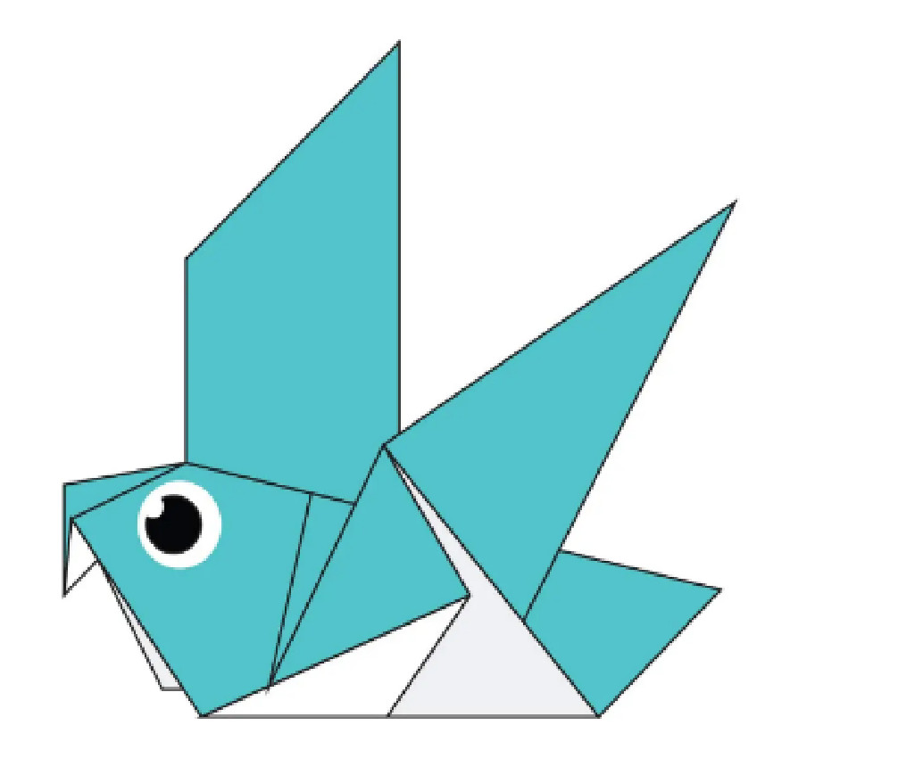

Interesting facts about camels
- There are two types of camels: One humped or “dromedary” camels and two humped Bactrian camels.
- Camels have thick lips which let them forage for thorny plants other animals can’t eat.
- Thanks to thick pads of skin on their chest and knees, camels can comfortably sit in very hot sand.
Interesting facts about chameleons
- Believe it or not, there are more than a few species of chameleon out there. In fact, scientists believe there to be around 160 different types at present!.
- You’ll likely find around half of them as being native to the secluded island of Madagascar, off the coast of Southern Africa. You’ll also find the critters roaming around the African mainland, as well as in Southern Europe.
- Chameleons, of course, are famous for changing color. This happens because their cells have pigment-shifting abilities. This means that they can open and close cells often to change from green to brown and back again.
Interesting facts about pigeons
- THEY MIGHT BE THE FIRST DOMESTICATED BIRD..
- THEY UNDERSTAND SPACE AND TIME.
- THEY CAN FIND THEIR WAY BACK TO THE NEST FROM 1300 MILES AWAY.

Interesting facts about bears
- The most accurate way to determine the age of a bear is to count the rings in a cross section of its tooth root under a microscope.
- Bears have two layers of fur. A short layer of fur keeps the bear warm. And a long layer keeps water away from the skin and short fur.
- Bears live as long as 30 years in the wild. One captive brown bear lived to the age of 47.
Interesting facts about pandas
- These magnificent mammals are omnivores.
- The giant panda’s scientific name is Ailuropoda melanoleuca, which means “black and white cat-foot”.
- Sadly, these beautiful bears are endangered, and it’s estimated that only around 1,000 remain in the wild. That’s why we need to do all we can to protect them!.
Interesting facts about flying cicadas
- A cicada is a flying insect.
- A cicada’s eye color can be blue, red or white.
- Cicadas are known for the loud sounds they can produce.